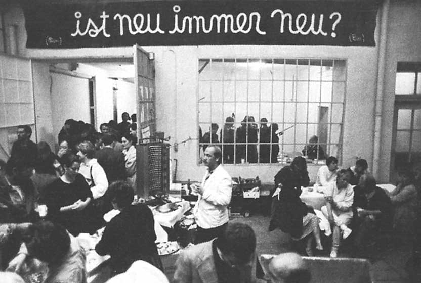

Die Lothringer 13. Halle für Gegenwartskunst, ist eine Einrichtung der Stadt München.  Als nicht kommerzielle städtische Galerie mit freiem Eintritt, ist die Halle ein Ort für produktiven Austausch zwischen Münchner Kunst- und Kulturschaffenden und internationalen Positionen. Durch spezifische künstlerische (Neu)produktionen und einen Fokus auf diskursive und interdisziplinäre Formate, verstehen wir die Lothringer 13 als einen Raum, in dem künstlerische Produktion, ihre Aushandlung, Präsentation und öffentliche Wahrnehmung zeitlich und räumlich verdichtet eine Reflexion von Gegenwart ermöglicht und diese einem größeren Publikum zugänglich macht.
1980 als Künstlerwerkstatt in einer Haidhauser Fabrikhalle gegründet, entwickelte die Lothringer 13 in wechselnden kuratorischen Besetzungen neue Formate und unterstützte insbesondere junge Künstler*innen und deren Produktionsbedingungen.
Als Entree zur Lothringer13 Halle befindet sich zusätzlich im Vorderhaus der Rroom, der zusätzlich Raum für Veranstaltungen bietet sowie handgemachten Kaffee und Getränken auf Selbstkostenbasis.
Tür an Tür neben der Halle im Hof ist der Lothringer13_Florida, ein unabhängiger Kunstraum im Lothringer 13 Areal verortet, welcher von einem mehrköpfigen Komitee organisiert wird.
Die drei Schilder an der Hausfassade wurden im Sommer 2014 umgestaltet und präsentieren nun eine Arbeit des Hamburger Künstlers Stefan Marx.
Die Lothringer13 Halle wurde von 2014 bis 2019 von Jörg Koopmann und seinem Team verantwortet. Dazu gehörten bis 2017 als Kern die Designerin und Kuratorin Tanja Seiner, und nachfolgend die Künstlerin Rita Hensen. Als internationale Beraterin und Netzwerkerin fungiert seit 2014 die Dänin Lene Harbo Pedersen. Von Juni 2014 bis Juli 2016 wurde das Programm von dem Kuratoren-Duo Dana Weschke / Jörg Koopmann gestaltet.
Zum Archiv der Lothringer13 Halle:
Archiv 2006–2010 unter Uli Aigner
Archiv 2010–2014 unter Felix Ruhöfer
Archiv 2014-2019 unter Jörg Koopmann